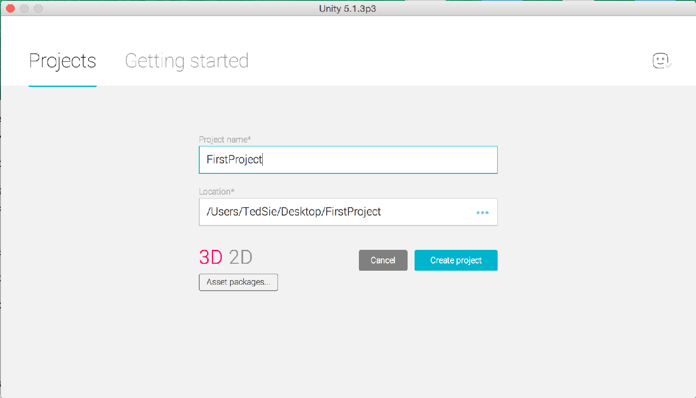
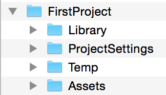
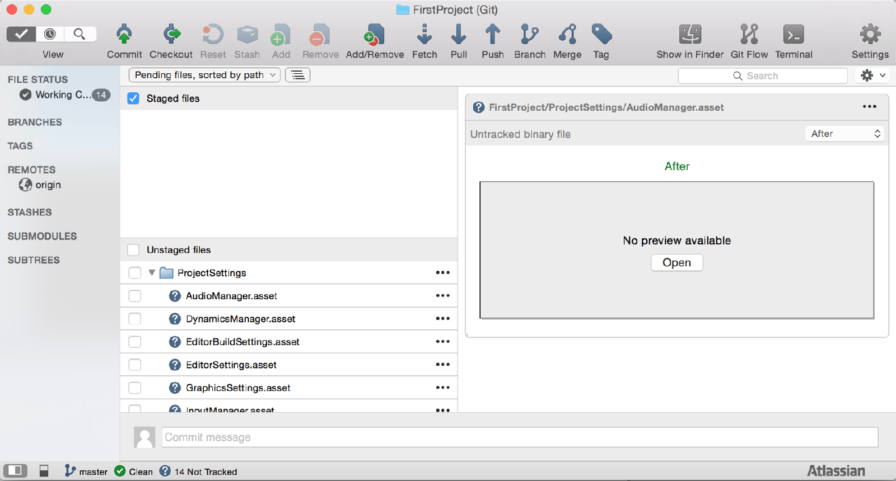
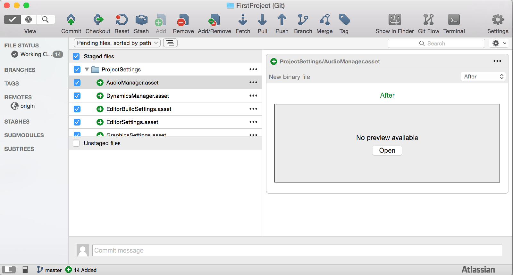
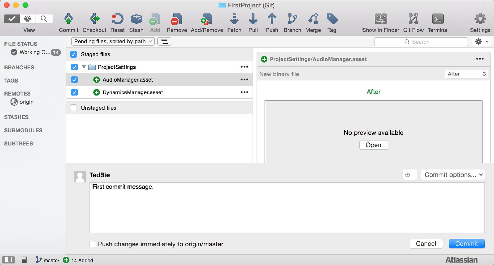
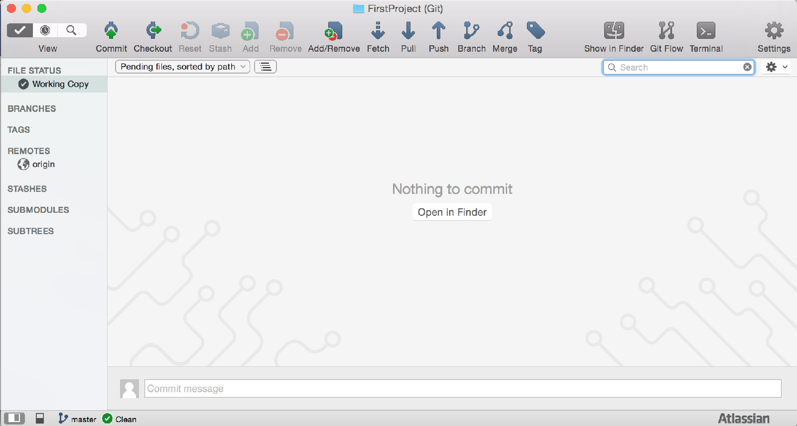
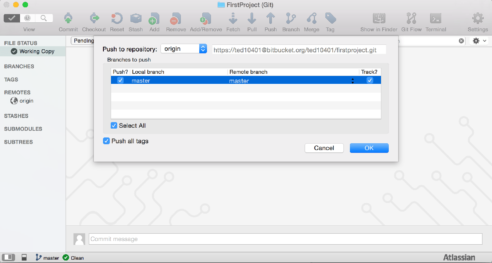

這一篇要使用第一次的 git commit 以及 git push
在開始前先簡單解釋一下 git commit 與 git push 這兩個的功用
git commit：將目前的修改的資料，新增一節點到當前分支
git push：將修改上傳到 Bitbucket 上（因為這邊使用了 Bitbucket）
這篇中我們會做幾個步驟
1.建立 Unity 專案
2.Git Commit
3.Git Push
上一篇中我們已經完成了環境設置
接下來就是要實際開始使用 Git 版本控制
這裡的範例是建立一個 Unity 專案
1.建立 Unity 專案
在 Git 專案路徑下建立 Unity 專案

在這裡專案建立後會在 Git 路徑下再新增一個資料夾
個人習慣是將專案資料跟 Git 專案路徑合併
變成以下結構

2.Git Commit
建立好 Unity 專案後
回到 SourceTree 會發現有一些改變
原本空白的專案中多了這些東西

這些代表了專案內資料的改變
將改變的資料全部勾選

點選下方的 Commit message 並輸入訊息

點選右下方的 Commit 按鈕
到這邊已經完成了第一次的 Commint

3.Git Push
點選上方的 Push 按鈕

勾選 master 並按下 OK
完成後就會將資料上傳到 Bitbucket 中